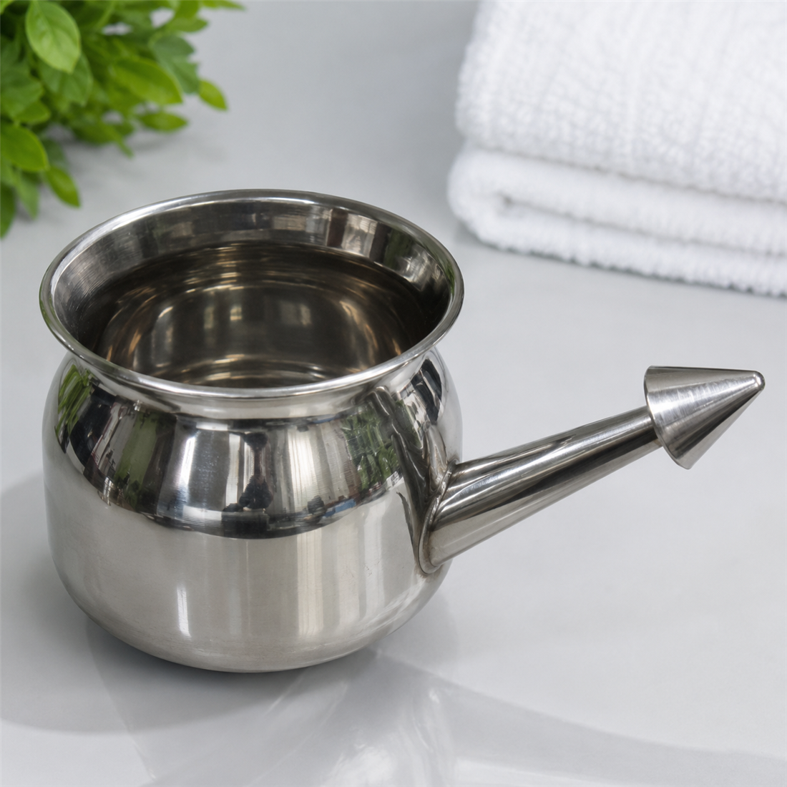

Cleansing / Water
Steel Jal Neti Pot
Rs. 699A stainless-steel nasal cleansing pot for the traditional Jal Neti kriya, designed to support a clean breathing routine before pranayama, yoga or morning practice.
- Stainless-steel body with tapered spout
- Easy to rinse, dry and keep hygienic
- Useful for saline nasal irrigation practice
- Pairs with morning breathwork and yoga
Suggested ritual
Use only with sterile, distilled or previously boiled and cooled water mixed with the right saline level. Clean and dry the pot after every use.
Important note
Do not use plain tap water. Avoid use during severe nasal infection, ear pain, bleeding or after nasal surgery unless cleared by a clinician.